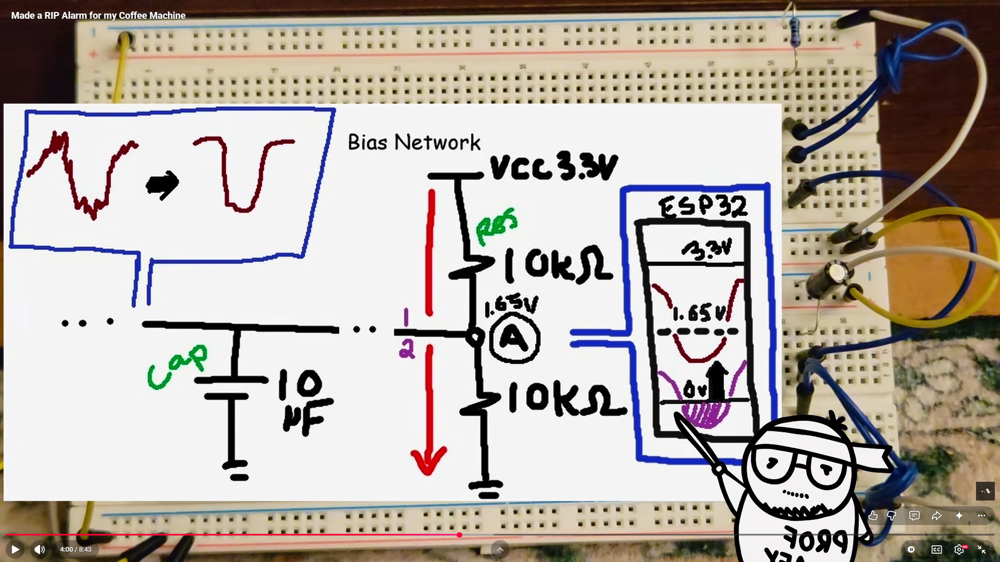
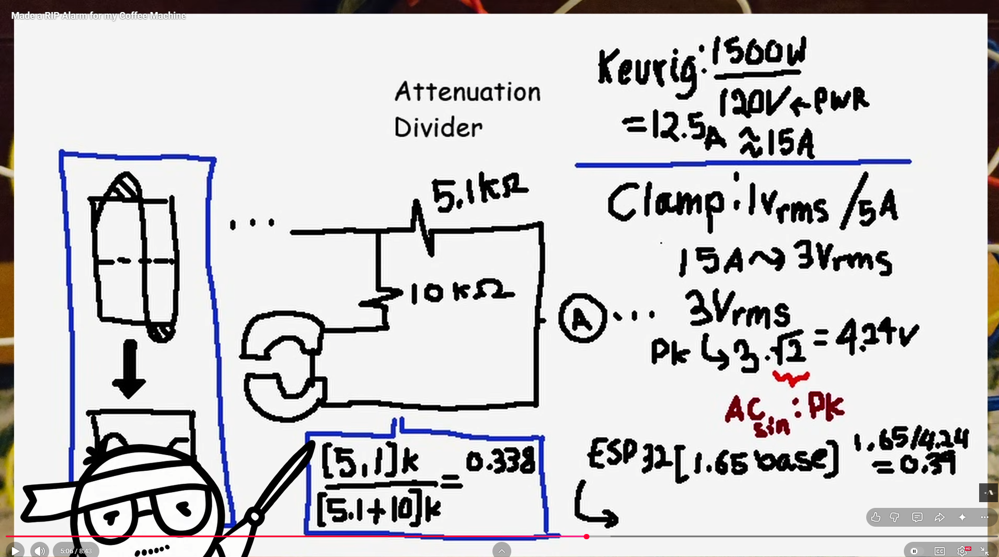
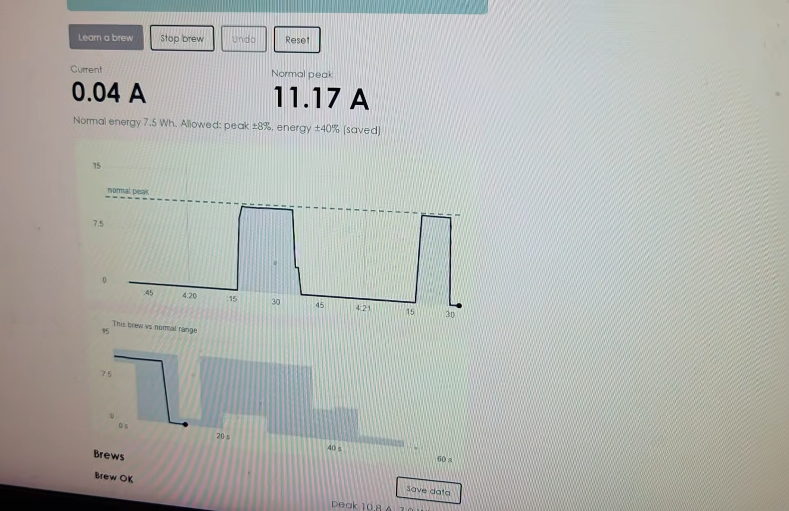
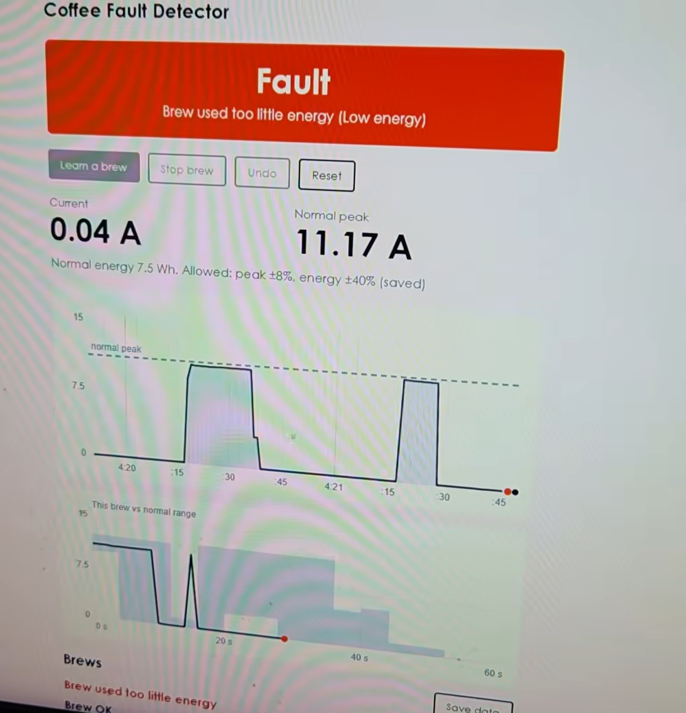
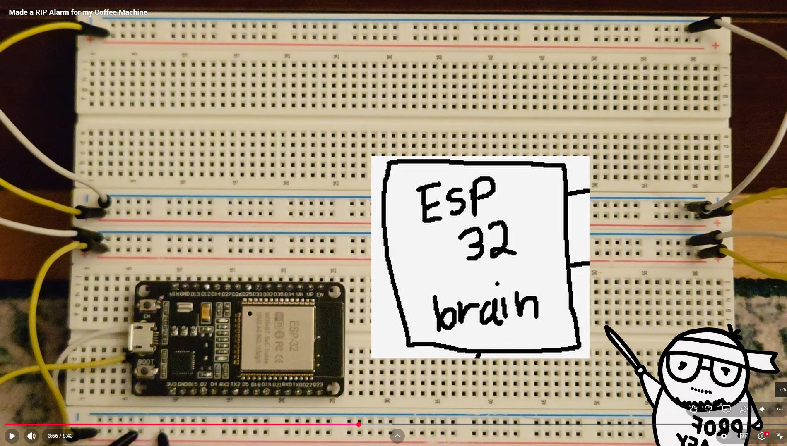

Appliances give no warning before they fail or misbehave. They either work or they do not. Your coffee machine could brew a weaker cup, draw less power than it should, or cut out early and you would never know.
A cheap sensor on the power cord can learn what a normal brew draws and speak up when something is off. An ESP32 clamps onto the Keurig's power line, builds a statistical model from 5 real brews, and flags anything that deviates from that signature in real time.
The detector uses no machine learning. With only 5 learned brews and one sensor, the right tool is statistics. It is the same approach real industrial condition monitoring starts with: measure normal, set a tolerance from the spread of your samples, and flag what falls outside it.
I evaluated seven approaches: threshold limits, statistical process control (SPC), signature analysis, model-based detection, trend monitoring (CUSUM/EWMA), ML anomaly detection, and redundancy. SPC plus signature analysis fit the constraints. ML requires far more than 5 samples and would not run reliably on an ESP32.
Press "Learn a brew" five times. The ESP32 records each brew's peak current, total energy in Wh, length in seconds, and a per-second current trace up to 160 seconds long. No data leaves the device.
Peak and energy use the median across the 5 brews, not the mean, so one cold-start outlier does not skew the model. Tolerance is set from the half-range spread of the samples, clamped between 8 and 40 percent.
The trace is split into 4-second bins, 40 bins across 160 seconds. For each bin the system stores the min and max current across all 5 brews. During a live brew, 3 consecutive readings outside any bin's band triggers a fault. Three in a row ignores single-second dropouts the Keurig produces normally.
After the machine stops, peak and energy are compared against the model. A brew that ended early but stayed inside the live band still fails here if total energy is too low. If the machine went quiet 3 or more seconds before Stop was pressed, the energy check still runs.
A fault banner appears on the web dashboard. A voice alert fires through a DFPlayer Mini and speaker: "I'qilha wa tawakkal" (Arabic: tie up your camel, then trust in God). The fault type and brew data are logged in flash memory.
The model, curve band, and last fault are saved to ESP32 flash using the Preferences API. The raw 5 brew traces are not stored, only the derived model, to fit within flash memory limits.
The SCT-013-005 split-core clamp outputs a small AC signal proportional to current, swinging above and below zero. The ESP32 ADC only accepts 0 to 3.3 V. Two stages of analog conditioning bridge that gap.
Two 10 kΩ resistors from 3.3 V to GND create a 1.65 V virtual ground. The AC signal from the clamp is coupled through a 10 µF capacitor and rides on this midpoint, keeping the full waveform inside the ADC's 0 to 3.3 V range.
From the Keurig nameplate: 1500 W / 120 V = 12.5 A, with a 15 A margin the peak is 4.24 V at the clamp (5 A per V). A 10k/10k divider (ratio 0.5) would clip near 11.7 A. A 5.1 kΩ / 10 kΩ divider (ratio 0.338) keeps the peak safely within ADC limits. Result: 14.8 A per V at the pin.


The ESP32 runs its own web server over WiFi. The dashboard is a self-contained HTML page served directly from flash. No external resources, no cloud. Connect your phone, see the live current and fault history.



Real machine tests
Simulation only (C++ harness, synthetic faults)
The missed power cut happened very late in the second heat phase, when the brew was nearly complete and the energy was only 12 percent below normal. Tighter limits would catch it but would also raise false alarms as the machine warms up across brews. That is a deliberate trade-off.
Before writing any detection logic, the Keurig's current signature was recorded and characterized. Heater draws 11.0 to 11.3 A, pump draws about 4 A, idle is 0.04 to 0.08 A. A warm brew runs two heat bursts with a pause in between, then a pump tail. A cold start runs the heater for about 70 seconds straight, drawing 32.6 Wh.
The divider ratio was calculated before any experiment. From the nameplate: 1500 W / 120 V = 12.5 A. With a 15 A safety margin, the clamp peak is 4.24 V. A 10k/10k divider would clip at 11.7 A. A 5.1 kΩ / 10 kΩ divider (ratio 0.338) stays safely within ADC limits at any realistic current level.
12 versions across roughly 3,000 lines of Arduino C++. Each version fixed a real bug found during testing: pump bursts before the brew counted as a fake brew and poisoned the model; the Stop button skipped the energy check so early cuts were missed; the dashboard hung on a guest network because of an external font stylesheet. Real data found all of these.
Testing on real hardware meant waiting for each brew. A C++ harness replaced Arduino, WiFi, WebServer, and Preferences with stubs so the detection logic could run on a laptop against synthetic and recorded traces. 80 simulated faults were injected, covering weak heaters, early cuts, and low-energy brews. A bug where the event counter saturated and made later detections look like zero was found and fixed this way.
Six real brew traces were recorded and exported as CSV. Leave-one-out: learn on 5, test on the held-out 6th, repeat for all 6. Fault injection scaled the heater current to 7, 8.5, and 10 A and truncated brews at various points. A bug where Stop silently skipped the energy check was found in replay and fixed in the final version.